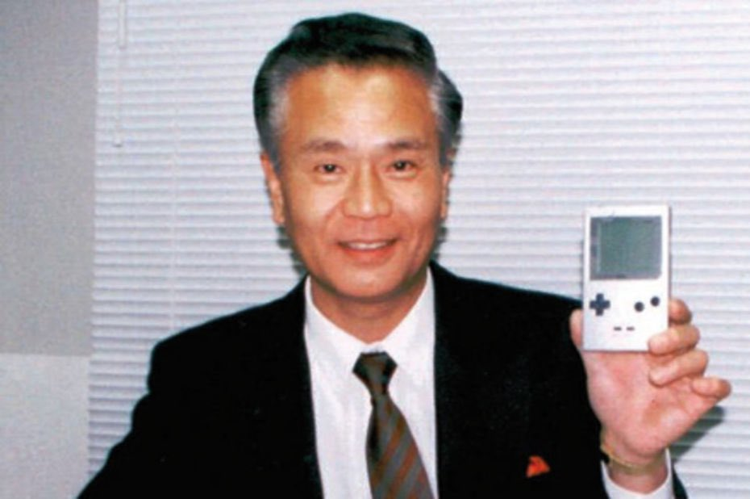

About Nintendo
Who We Are
Nintendo takes great pride in putting smiles on the faces of our customers. Through our many worlds and fun experiences for anyone
We origininated in Japan, but with our now global audience, we are committed to delivering the best products and services to everyone
President of Nintendo of America
Doug Bowser
Doug joined our team back in 2015 as the vice-president of sales, and has since rose to the role as President of our American branch back in 2019, preceding the legendary Reggie Fils-Amie. And no, his last name is indeed real, and not some fancy publicity stunt!
President of Nintendo of Japan
Shuntaro Furukawa
Furukawa-san has been an employee at Nintendo since 1994, and joined the Board of Directors in 2016. Following Tatsumi Kimishima, he became President of Nintendo in 2018. His long history with us and great love for games make him a super swell guy!
Lead GameBoy Developers
Gunpei Yokoi
This right here is a man who affected history. The lead creator and developer of the GameBoy came from his brilliant mind. Yokoi-san can also be credited with the production of hit game series such as Kid Icarus and Metroid. Unfortunately, he passed away in 1997, but he will always be remembered as someone who embodied the Nintendo style!
Shigeru Miyamoto
Another legendary figure in the video game industry, Miyamoto-san is credited for the creation of the Super Mario, Donkey Kong and The Legend of Zelda series. Having been with the company since 1977, his status amongst the company is one of honour, as he is someone who many around the world respect. He is still to this day a producer at Nintendo!